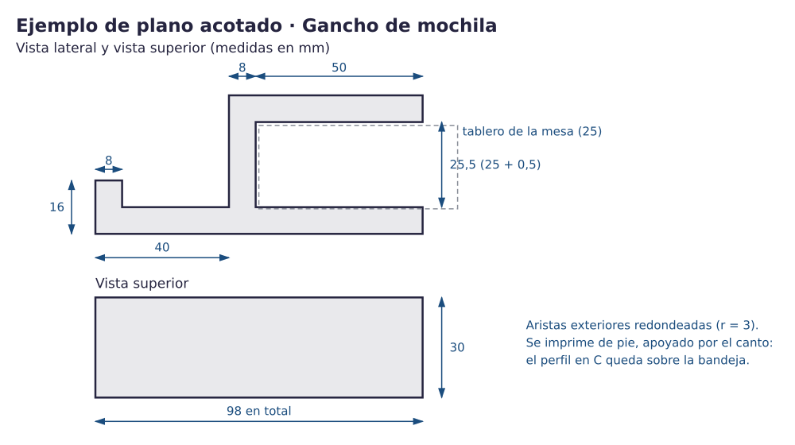

Contenido
Qué vas a aprender
A documentar una pieza para que otra persona pueda fabricarla sin preguntaros nada: plano, materiales, proceso, ciclo de vida, y una licencia abierta que diga qué se puede hacer con vuestro diseño. Es lo que hacen las comunidades de diseño abierto en todo el mundo.
La plantilla
Crear la copia de la ficha técnica del equipo (una por equipo; se guarda en la carpeta 04_ficha_tecnica y se comparte con el equipo). Tiene los siete apartados ya montados: solo hay que rellenarlos.
Qué es una ficha técnica
Es el documento que acompaña a un producto y responde, con vocabulario técnico y sin adornos, a cuatro preguntas: qué es y para qué sirve, cómo es exactamente (el plano), de qué está hecho y cómo se fabrica, y qué pasa con él a lo largo de su vida. Una buena ficha técnica se entiende sin haber estado en el taller.
| Apartado | Qué lleva |
|---|---|
| 1. Identificación | Nombre de la pieza, función, dónde va instalada, nivel del catálogo, vía (impresión + manual, solo-3D o solo-manual). |
| 2. Plano acotado | Las vistas necesarias con todas las medidas que hacen falta para fabricarla. Ver abajo cómo hacerlo desde TinkerCAD. |
| 3. Materiales | Lista de materiales con cantidades: gramos de PLA, medidas de la madera, tornillería. Por qué ese material (la matriz de decisión resumida). |
| 4. Fabricación | Parámetros de impresión (altura de capa, perímetros, relleno, soportes, orientación) y tiempo; pasos del acabado y montaje con las herramientas usadas; qué se cambió tras la prueba. |
| 5. Ciclo de vida | Las cinco fases aplicadas a vuestra pieza: de dónde sale el material, cómo se fabrica, cómo llega a su sitio, cómo se usa y mantiene, y qué se hace con ella al final. |
| 6. Uso y mantenimiento | Cómo se instala, cómo se usa, qué revisar de vez en cuando, cómo se repara o se sustituye una parte. |
| 7. Licencia | La licencia Creative Commons elegida, escrita con la frase completa; qué aporta y qué exige una comunidad abierta de diseño (con un ejemplo) y en qué se parece vuestra pieza a un proyecto de servicio a la comunidad. |
El plano desde TinkerCAD
TinkerCAD no genera planos, pero sí lo necesario para hacerlo:
- Coloca la Regla en una esquina de la pieza: aparecen las medidas de cada forma.
- Usa el cubo de vistas para ver la pieza desde arriba, de frente y de lado, y haz una captura de cada vista con la Regla visible. Vista ortográfica (botón bajo el cubo de vistas), no perspectiva.
- Pega las tres capturas en la ficha y escribe encima las cotas que faltan (ancho, alto, diámetros, distancias a los bordes), como en los planos de los retos.
- Si el equipo prefiere, un croquis a mano con escuadra y cotas, fotografiado, vale igual. Lo que importa es que con el plano se pueda fabricar la pieza.

El ciclo de vida de vuestra pieza
| Fase | Pregunta para vuestra pieza |
|---|---|
| 1. Materias primas | ¿De qué está hecho el PLA / la madera que habéis usado y de dónde viene? |
| 2. Fabricación | ¿Cuánto tiempo de impresora, cuánta energía aproximada, qué residuos (soportes, descartes, virutas)? |
| 3. Distribución | Aquí es corta: del taller a su sitio. ¿Necesita embalaje o tornillería para instalarla? |
| 4. Uso y mantenimiento | ¿Cuánto debería durar? ¿Qué se desgasta? ¿Se puede reparar o cambiar una parte? |
| 5. Fin de vida | ¿Qué parte se reutiliza, cuál se recicla de verdad y cuál acaba en la basura? ¿Qué cambiaríais en el diseño para mejorar esta fase? |
Licencias abiertas: decir qué se puede hacer con tu diseño
Cuando publicas un diseño, por defecto nadie puede copiarlo ni modificarlo sin tu permiso. Una licencia abierta da ese permiso por adelantado y dice con qué condiciones. Las más usadas son las Creative Commons (CC), que se construyen combinando cuatro condiciones:
| Condición | Sigla | Significa |
|---|---|---|
| Reconocimiento | BY | Hay que citar a quien lo hizo. Está en todas las licencias CC. |
| Compartir igual | SA | Si lo modificas, tu versión tiene que llevar la misma licencia. |
| No comercial | NC | No se puede usar para ganar dinero. |
| Sin obras derivadas | ND | Se puede copiar, pero no modificar. |
Para un diseño que queréis que otros mejoren, la licencia habitual es CC BY-SA: cualquiera puede usarlo y modificarlo, citándoos y compartiendo igual. Con ND nadie podría adaptarlo, que es justo lo contrario de lo que busca una comunidad abierta. La licencia se declara con una frase en la ficha, por ejemplo:
Frase de licencia
«Gancho de mochila para mesa», diseñado por el equipo Nombre del estudio (Tecnología 4.º ESO, IES El Majuelo). Este diseño se publica bajo licencia Creative Commons Reconocimiento – Compartir igual 4.0 (CC BY-SA 4.0).
Dónde se entrega el diseño abierto
Vuestra ficha y vuestro modelo se entregan en Moodle, con la licencia declarada, y quedan disponibles para el centro. No se suben a plataformas externas: el diseño abierto no exige publicar en internet, exige decir claramente qué permitís hacer con él. Si más adelante alguien quiere publicarlo, la licencia ya está decidida.
Comunidades abiertas: de dónde viene todo esto
Buena parte de lo que habéis usado existe porque alguien lo compartió con licencia abierta. Las impresoras 3D de escritorio nacieron del proyecto RepRap, una impresora diseñada para poder imprimir sus propias piezas, con planos públicos. Hoy miles de personas comparten diseños en repositorios como Printables, Thingiverse o Wikifactory, y los mejoran entre todas. Hay comunidades de voluntariado tecnológico que diseñan e imprimen prótesis de mano para niños y adultos (e-NABLE), ayudas técnicas para personas con discapacidad o piezas de repuesto para reparar aparatos que el fabricante ya no atiende. Vuestra pieza para el centro es, a pequeña escala, exactamente eso: un proyecto de servicio a la comunidad.
Qué aporta una comunidad abierta (y qué exige)
- Aporta: no partir de cero, muchas personas probando y mejorando, soluciones para necesidades que a ninguna empresa le compensan (una prótesis infantil que hay que cambiar cada año).
- Exige: documentar bien (una ficha técnica como esta), respetar las licencias de los diseños que se reutilizan y devolver las mejoras a la comunidad.
La ficha y la presentación son la difusión del proyecto
Un proyecto que no se cuenta no existe para nadie más. La ficha técnica es la difusión escrita de vuestra pieza y la presentación de dos minutos del final de la unidad, la difusión oral. En las dos se exige lo mismo que en cualquier comunicación técnica: vocabulario preciso, tiempo controlado, reparto de la palabra y lenguaje inclusivo, libre de estereotipos («el alumnado», «quien la use», «las personas con movilidad reducida»; nunca «los chicos», «los alumnos» ni adjudicar tareas por sexo).
Actividad · Completad y entregad la ficha
- Rellenad los siete apartados de la plantilla. Todo con vocabulario técnico: «cordón», «perímetro», «holgura», «tirafondo», no «el hilo ese» ni «el tornillo gordo».
- Pegad las capturas del plano con las cotas y la captura del laminado.
- Escribid la frase de licencia con el nombre del estudio, sin nombres de personas.
- Revisad la ficha con la lista de comprobación de la chuleta y descargadla en PDF.
Entrega en Moodle
Tarea Ficha técnica abierta. Archivo: ficha_tecnica.pdf. La sube una sola persona del equipo, después de entregar la pieza.
Qué se valora
- Comunicación técnica: plano completo y legible, vocabulario correcto, estructura de la ficha, se puede fabricar leyéndola.
- Análisis del ciclo de vida de la pieza, con datos de la vuestra, no generalidades.
- Licencia bien elegida y bien declarada, y explicación de qué aporta compartir el diseño.
Relaciona
Relaciona cada sigla de las licencias Creative Commons con lo que significa.
Relaciona cada sigla de las licencias Creative Commons con lo que significa.
", "showMinimize": false, "itinerary": {"showClue": false, "clueGame": "", "percentageClue": 40, "showCodeAccess": false, "codeAccess": "", "messageCodeAccess": ""}, "cardsGame": [{"url": "", "x": 0, "y": 0, "author": "", "alt": "", "audio": "", "color": "#000000", "backcolor": "#ffffff", "eText": "BY", "urlBk": "", "xBk": 0, "yBk": 0, "authorBk": "", "altBk": "", "audioBk": "", "colorBk": "#000000", "backcolorBk": "#ffffff", "eTextBk": "Hay%20que%20citar%20a%20quien%20lo%20hizo"}, {"url": "", "x": 0, "y": 0, "author": "", "alt": "", "audio": "", "color": "#000000", "backcolor": "#ffffff", "eText": "SA", "urlBk": "", "xBk": 0, "yBk": 0, "authorBk": "", "altBk": "", "audioBk": "", "colorBk": "#000000", "backcolorBk": "#ffffff", "eTextBk": "Si%20lo%20modificas%2C%20tu%20versi%C3%B3n%20lleva%20la%20misma%20licencia"}, {"url": "", "x": 0, "y": 0, "author": "", "alt": "", "audio": "", "color": "#000000", "backcolor": "#ffffff", "eText": "NC", "urlBk": "", "xBk": 0, "yBk": 0, "authorBk": "", "altBk": "", "audioBk": "", "colorBk": "#000000", "backcolorBk": "#ffffff", "eTextBk": "No%20se%20puede%20usar%20para%20ganar%20dinero"}, {"url": "", "x": 0, "y": 0, "author": "", "alt": "", "audio": "", "color": "#000000", "backcolor": "#ffffff", "eText": "ND", "urlBk": "", "xBk": 0, "yBk": 0, "authorBk": "", "altBk": "", "audioBk": "", "colorBk": "#000000", "backcolorBk": "#ffffff", "eTextBk": "Se%20puede%20copiar%2C%20pero%20no%20modificar"}, {"url": "", "x": 0, "y": 0, "author": "", "alt": "", "audio": "", "color": "#000000", "backcolor": "#ffffff", "eText": "CC%20BY-SA", "urlBk": "", "xBk": 0, "yBk": 0, "authorBk": "", "altBk": "", "audioBk": "", "colorBk": "#000000", "backcolorBk": "#ffffff", "eTextBk": "La%20licencia%20habitual%20para%20un%20dise%C3%B1o%20que%20otras%20personas%20puedan%20mejorar"}], "isScorm": 0, "textButtonScorm": "Guardar la puntuación", "repeatActivity": true, "weighted": 100, "textAfter": "", "version": 2, "percentajeCards": 100, "type": 0, "showSolution": true, "timeShowSolution": 3, "time": 3, "evaluation": false, "evaluationID": "f96bc37c-5aaf-40e4-af65-a544218a46a6", "id": "idevice-1789366355555-nbk2x8mym", "msgs": {"msgSubmit": "Enviar", "msgClue": "¡Genial! La pista es:", "msgCodeAccess": "Código de acceso", "msgPlayStart": "Pulsa aquí para jugar", "msgScore": "Puntuación", "msgErrors": "Errores", "msgHits": "Aciertos", "msgMinimize": "Minimizar", "msgMaximize": "Maximizar", "msgFullScreen": "Pantalla Completa", "msgExitFullScreen": "Salir del modo pantalla completa", "msgNoImage": "Pregunta sin imágenes", "msgEndGameScore": "Comience la partida antes de guardar la puntuación.", "msgScoreScorm": "La puntuación no se puede guardar porque esta página no forma parte de un paquete SCORM.", "msgOnlySaveScore": "¡Solo puede guardar la puntuación una vez!", "msgOnlySave": "Solo puede guardar una vez", "msgInformation": "Información", "msgYouScore": "Su puntuación", "msgAuthor": "Autoría", "msgOnlySaveAuto": "Su puntuación se guardará después de cada pregunta. Solo puede jugar una vez.", "msgSaveAuto": "Su puntuación se guardará automáticamente después de cada pregunta.", "msgSeveralScore": "Puede guardar la puntuación tantas veces como quiera", "msgYouLastScore": "La última puntuación guardada es", "msgActityComply": "Ya ha realizado esta actividad.", "msgPlaySeveralTimes": "Puede realizar esta actividad cuantas veces quiera", "msgClose": "Cerrar", "msgAudio": "Audio", "msgNumQuestions": "Número de tarjetas", "msgTryAgain": "Necesitas al menos %s% de respuestas correctas para obtener la información. Inténtalo de nuevo.", "msgEndGameM": "Has completado el juego. Tu puntuación es %s.", "msgUncompletedActivity": "Actividad no completada", "msgSuccessfulActivity": "Actividad superada. Puntuación: %s", "msgUnsuccessfulActivity": "Actividad no superada. Puntuación: %s", "msgTypeGame": "Relaciona", "msgCheck": "Comprobar", "msgRestart": "Reiniciar"}}